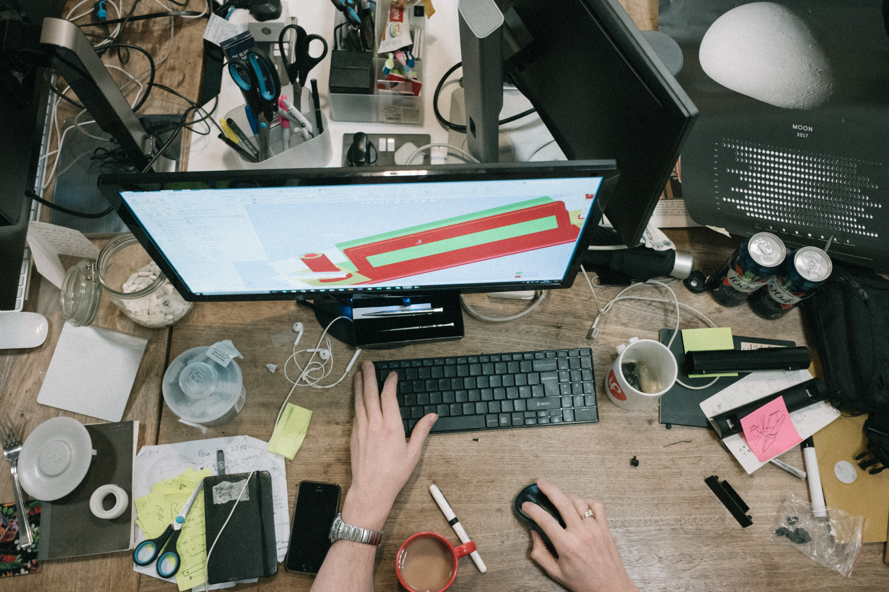
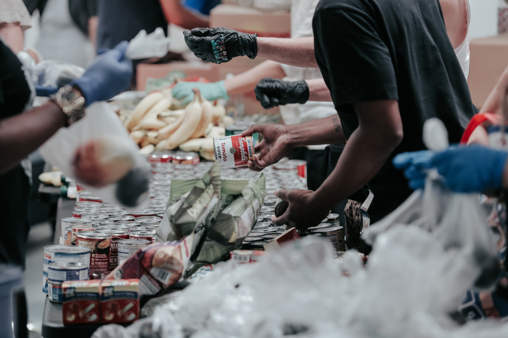

Fullfillment
Feel motivated and happy to support a cause they believe in

Community
Want to help give back to those in need within their local spaces

Busy Schedule
Would like to volunteer more but can't seem to find events that work with their schedule

Limited Resources
Money is tight so they prefer to find other ways to support